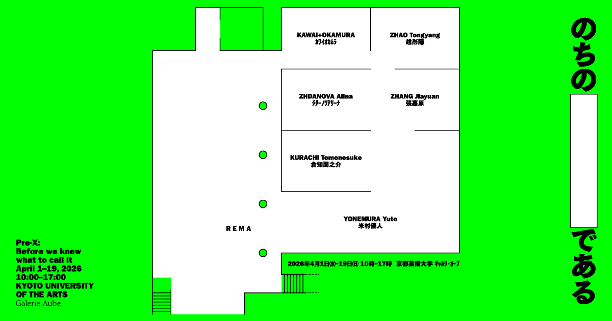
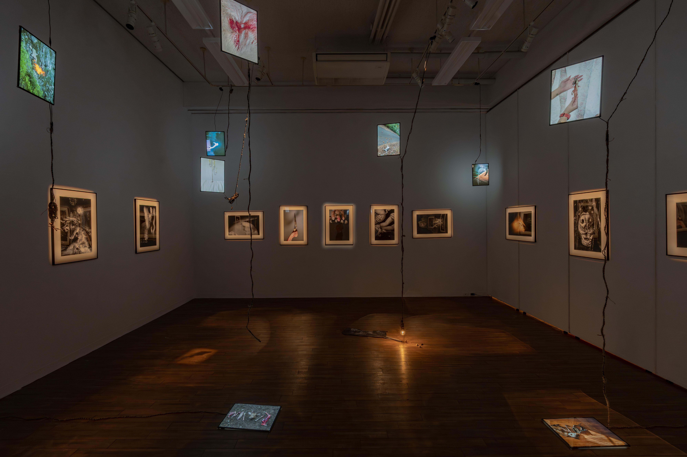
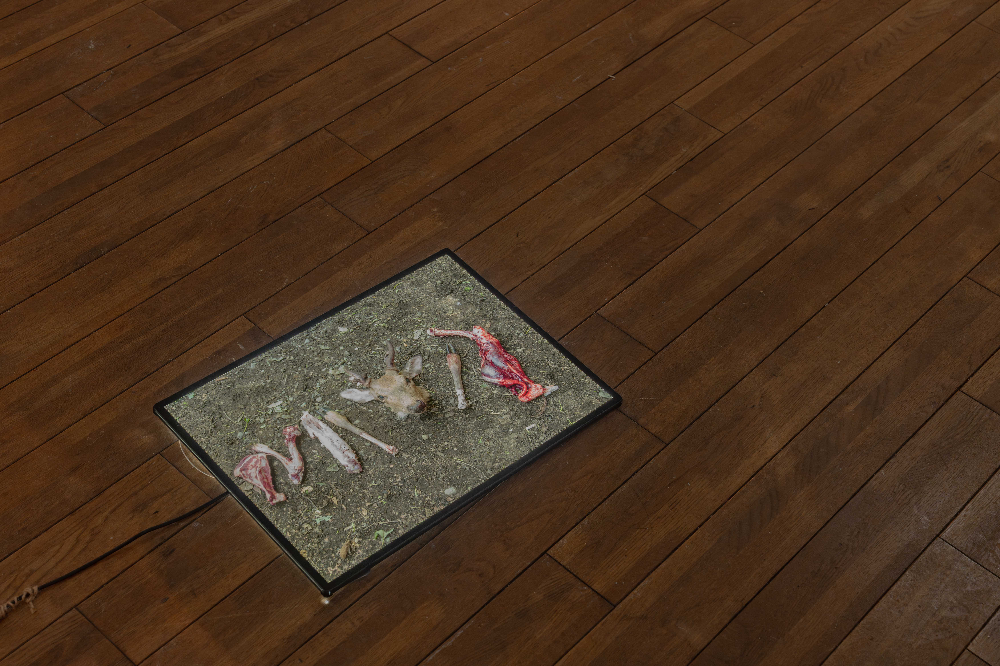
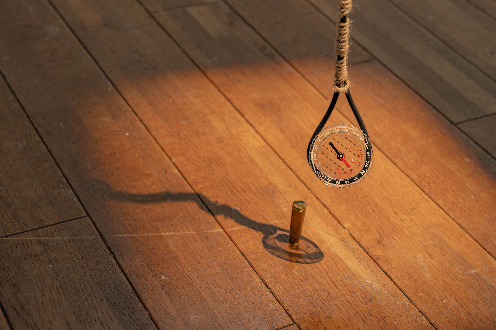
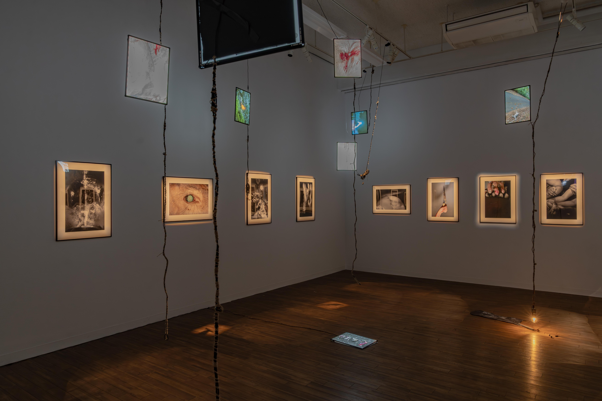
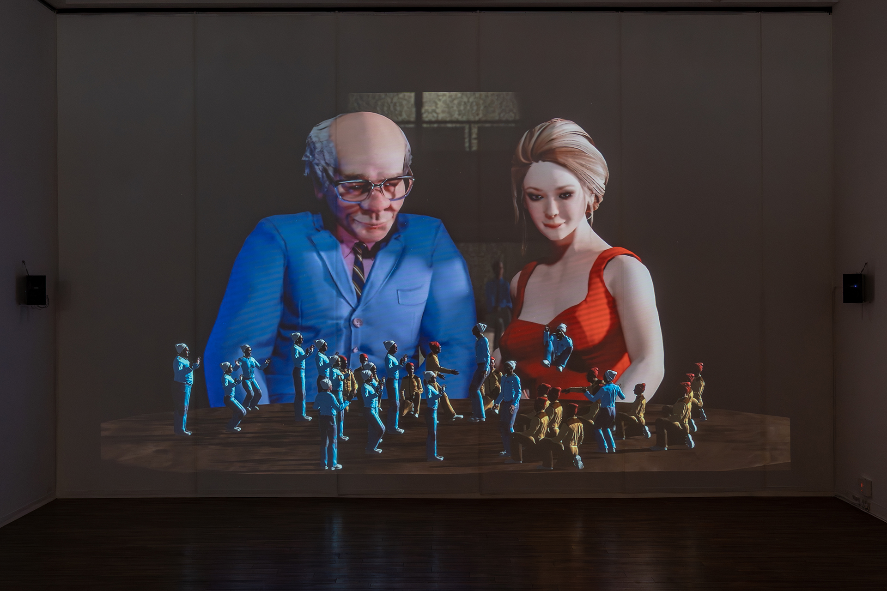

Exhibition Archive

のちのである
Pre-X: Before we knew what to call it
Statement [A]
「のちの＿＿＿＿＿である Pre-X: Before we knew what to call it」は、京都芸術大学の卒業生を中心に、大学院生と教員を加えた7組のｱｰﾃｨｽﾄによる展覧会です。
本学は2027年に学園創立50周年を迎えます。「京都文藝復興」「藝術立国」という理念のもと、芸術を通して時代と向き合ってきた歩みを踏まえつつ、本展ではあらためて《つくる》という人間の根源的な営みに視線を向けます。ｺﾛﾅ禍を経た社会の変容や、自動生成AIの台頭がもたらす情報環境の急激な転換の只中で、それでもなお、わたしたちが自らの内発的な衝動から思考を起こし、身体を介して空間にかたちを立ち上げる意味は何か。その問いに応答する複数の現在形が、本展で交差します。写真、映像、ｲﾝｽﾀﾚｰｼｮﾝ、立体など、多様なﾒﾃﾞｨｱを通して、感覚と空間、認識と記憶の関係をあらためて問い直す場となるでしょう。
参加ｱｰﾃｨｽﾄは、それぞれに明確な方法と持続的な探究を軸に表現活動を積み重ねてきました。独自の軌道を描き始めている者もいれば、研究と制作を往還しながら射程を広げつつある者もいます。いずれも可能性の提示にとどまらず、具体的な実践の蓄積によって確かな存在感を示している点で共通しています。
ﾀｲﾄﾙとした「のちの＿＿＿＿＿である」という語法は、本来、後世から現在を振り返る構文ですが、その形式を未来が確定していない段階にあえて重ねています。ここに並ぶ実践が将来どのように語られるのかは、まだ＿＿＿＿＿です。評価や物語が定着する以前の、しかし確かな強度を帯びた制作の断面を示すことに、本展の意義があります。
無数の像や言葉が瞬時に生まれ流通し消費される時代にあっても、《つくる》という営みは効率や機能といった尺度では測れない領域を備えています。会場に身を置き、作品の前で立ち止まり、言語に収まりきらない感触を受け取りながら想像をめぐらせる——その時間が、それぞれの「のち」を考える静かな足場となることを願っています。
川合匠（ｷﾞｬﾙﾘ･ｵｰﾌﾞ運営委員会委員長／京都芸術大学芸術学部情報ﾃﾞｻﾞｲﾝ学科教授）
Statement [B]
「のちの＿＿＿＿＿＿である」という構文について、まず基本的な仕組みを考えてみる。「のちの＋名詞句＋である」という定型において、各要素の機能はそれぞれ独立して重要である。「のちの」は時間的後続性を指示する連体修飾語であり、「あとの」と意味的に近いが、より文語的･遠時的な含意をもつ。名詞句はその人物や事象が後に帯びることになる称号･声望･役割･意義等の名を示す。「である」は断定の助動詞「だ」の文語形として、語り手の確言的･権威的態度を担う。単なる「＿＿＿＿＿だ」や「＿＿＿＿＿となる」ではなく「＿＿＿＿＿である」が選ばれる点は修辞的に決定的であり、この語尾は語り手の全知性と叙述の公式性を保証する感が他に比し強い。
「のちの」も「である」も音感は単純である。５歳児でも声に出して読み上げることはできる。昔話や絵本の語りにまぎれ込んでも違和感はない。ゆえに、その内部にある時制構造の複雑さは見過ごされやすく、正味の話、５歳児が人物や出来事を説明する際にこの構文を使うことはきわめてまれだろう。歴史語りの成分が含まれ、使われた瞬間に時空を超越した気配が生まれる。ことば自体は耳馴染みもあり、お手軽な印象だが、成人でさえ日常会話でほとんど口にしない。標準的用方は、普段使いに向いていないといえる。
このﾌﾚｰｽﾞを用いるとき、語り手は未来を知っている側に立つ。人物の幼き日々を紹介しながら、「のちの暴君Tである」と付け加えるとき、そこにはすでに確定した歴史が前提として存在する。完結した物語の側から、過去を遡って現在を照らし返す、時間的視点の移動が本来の効果といえる。現在はもはや現在ではなく、未来によって意味づけられた過去であり、伏線として読み替えられた瞬間となる。後の結果を、叙述の順序ではなく、命名の次元で先取りする操作といえる。（ある人工知能はこれを「遡及的同定構文」と命名し、ある知能は「語彙的先取り同定」と名付けることを提案した。）
この遡及性には、しかし別の働きもある。過去をある名で確定することは、その時点が持っていたはずの複数の可能性を、ひとつの結末へと収斂させる。現在が物語に回収されていくということでもある。名付けること、名付けられることは、祝福であると同時に拘束でもあるかもしれない。
本展では、拘束を成立させるはずの〝確定した未来〟を前提にしていない。後置的な全知語り手が存在しない。確定した結末がない時点において、「のちの」と言ってみる。会場に並ぶ制作や実践を、いま直ちに論理的に整頓することをいったん宙に浮かせ、将来何と呼ばれるだろうかという空想可能な余白を仮設する。微妙に複雑な時制の往還を、冗談として消費するだけでなく、この場所にｲﾝｽﾄｰﾙされた問いの現在地を測るための視点として用いる。
英題「Pre-X: Before we knew what to call it」は、その保留を別の系から支えている。比較言語学において、後代の資料から語り直せる段階があるとしても、その手前にはなお、仮構としてしか形を与えられない前史的な領域が残ると仮定され、これをpre-Xと呼ぶという。学術的援用というよりも、呼び名が定着する以前の、漠然としていながらも気になってしかたがない状態を表すのに、この概念がぴたっときたというのが近い。まだXと呼ぶほかない、あるいはまだXと呼ぶことすらできない、さしあたりのpre-Xである。
制作とは、未来の保証を持たない行為である。が、実際のところは、保証がないからこそ始まってしまう、始めてしまうという面もある。各作家はそれぞれ固有の方法と持続的な探究方法を有しているが、それらが将来どのような文脈で語られるのかはまだわからない。今あるのは、完成された物語ではなく、物語化以前の強度である。「のちの」をあえて掲げることで、未来の視線を仮設しつつ、視線の先の不可視の世界に想像を巡らせ、ｲﾒｰｼﾞと仮説を愉しむ。
会場に立つとき、鑑賞者もまたこの時間構造の内側にいる。記憶は過去をいまへ滲ませ、身体の反応は遅れやずれとして空白をつくり、反復や引用はすでに知っていたはずの流れを別の速度へと変質させる——ｷﾞｬﾗﾘｰ空間ではいくつもの時間世界が混在している。見ているつもりの瞬間、理解した感触を得るまでの間、あとから遅れて効いてくる余韻——それらはたいてい一致しない。判断が定着する以前の状態があり、少し経ってから後味に気づき、まだ言語化できていなかった何かに触れていたのかもしれないと思うことがある。ほぼﾀｲﾄﾙについての随想となったが、これを展覧会ｽﾃｲﾄﾒﾝﾄと呼ぶことにする。
川合匠
Artist 01
《In Dialogue》 2025-2026｜映像ｲﾝｽﾀﾚｰｼｮﾝ｜6:00
《In Dialogue》は、言葉を介さない対話の可能性を探る映像インスタレーションである。一人のダンサー（大歳芽里）とジダーノワのあいだにカメラを設置し、身体の動きだけで交わされるやりとりの様子を記録した。思っていることや感じたことを動きとして差し出し、受け手はそれを自由に解釈してふたたび動きで応じる。正確に伝わることよりも、受け取り方がそれぞれ違っていいという関係を、二人のセッションは前提としている。映像には、その場の感覚をもとにしたアニメーションが重ねられ、まだら模様のペインティングを施した透過性の布を通して投影される。3面の布は空間に立体的に設置され、鑑賞者の位置や動き、布と壁に映し出される光と影の重なりによって、像は絶えず曖昧に揺らぎ、届いたかどうかが確認できないまま続く応答の連鎖——対話そのものの構造——と呼応している。
ｱｰﾄﾌﾟﾗｸﾃｨｽ･ﾀﾞｲｱﾛｰｸﾞ
宛先不明：Pre-pre: X の観測報告
本記録は、未定義主体X（ｼﾞﾀﾞｰﾉﾜ･ｱﾘｰﾅ）との対話をもとに作成されたものである。
提出先は現時点で特定されていない。
※ ※ ※
拝啓 この報告を受け取る____へ
ｱﾘｰﾅはﾛｼｱｹｰｷのようだ。ﾛｼｱｹｰｷは、その実日本発祥であるし、二度焼きで、異なる硬さの生地を組み合わせて作られるのが特徴である。彼女も母語は日本語であり、ﾛｼｱ語を軸とした独自言語を操り、自身の記憶と感覚を映像と組み合わせた独特の表現を作り上げている。装飾や形がさまざまであるように、彼女の関心や思考もまた実に豊かだ。飛び抜けた明るさと知的好奇心を感じる女性である。
ｱﾘｰﾅの今回の展示作品は《In Dialogue》というｲﾝｽﾀﾚｰｼｮﾝ作品だ。
この作品は、助成金を得てこれから始まる3年間の研究の出発点となる。
《In Dialogue》は、岐阜にある情報科学芸術大学院大学［IAMAS］で昨年の夏に行われた滞在制作のﾃｰﾏ／ﾀｲﾄﾙ「言葉のない手紙」から発展した作品だ。映像では、ｱﾘｰﾅとﾀﾞﾝｻｰが画面のなかを自由に動いていく。それらを360度ｶﾒﾗで記録したものが、3面の布ｽｸﾘｰﾝに映し出される。
現代において、ｺﾐｭﾆｹｰｼｮﾝの前提は言葉である。しかし、言葉だけでは伝わらない部分というのは確実に存在する。そこで彼女は、言葉や言語を一度ｺﾐｭﾆｹｰｼｮﾝから外してみる試みをすることで、別の見え方ができるのではないかと考えている。たとえば、滞在中に行われたﾜｰｸｼｮｯﾌﾟでは、二人一組になり、自分の考えを身体表現で相手に伝える試みが行われた。相手はそれを理解するわけではなく、「自分はこう思った。」程度に受け止めて、さらに好きに応答していく。こうすることで、言葉を抜け出して、意味の投げ合いを実践できる。そのなかで参加者から、「たった3時間程度しか同じ空間にいなかったにもかかわらず、誰よりもこの人を知っている感覚になった。」というﾌｨｰﾄﾞﾊﾞｯｸがあり、印象的に覚えていると語っていた。
言葉は素晴らしい発明だと深く理解しながらも、それ以外を捨ててしまう性質に、彼女は疑問を抱く。たとえばﾏｯｷｰを見て「ﾏｯｷｰだ。」と言った瞬間、それはもうそれ以外の可能性を持たなくなる。もしかしたらそれは、ﾘｯﾌﾟｸﾘｰﾑだったかもしれないし、のりだったかもしれない。ｱﾘｰﾅは、そういった言葉による確固たるｺﾐｭﾆｹｰｼｮﾝの形が理想とされていることに問題意識を感じている。彼女は「理解し合うこと」そのものをｺﾐｭﾆｹｰｼｮﾝの前提としない。むしろ、わからないまま同じ場にいることのほうが、より人と人を近づけるのではないかと考えている。
彼女の研究は「記憶」に関わるものだ。記憶の仕組みや、それがどのように変化していくのかを探っている。作品のなかには自身のﾊﾟｰｿﾅﾙな記憶をﾓﾁｰﾌにしたものもあるが、多くの場合は人にｲﾝﾀﾋﾞｭｰを行い、その人の記憶を素材として用いる。たとえ自分の記憶を題材にする場合でも、それを一度外側に取り出して眺め、客観的に処理することを大切にしているという。私的な経験であっても、そこに他者が入り込める余地を残すためだ。たとえば、自身の声でﾅﾚｰｼｮﾝを入れる際にも「私」という主語をあえて使わないなど、細かな点まで注意を払っている。記憶は取り出された瞬間に少しずつ自分から離れ、分析を重ねるほどさらに遠ざかっていく。その距離の感覚は、彼女の制作態度にも表れている。制作は基本的にｸﾛｰｽﾞﾄﾞで内省的だ。ｱﾘｰﾅはｱﾆﾒｰｼｮﾝを制作する際、ﾃﾝﾄのような作業場にこもり、暗い世界のなかでひとり心血を注ぐ。しかし、そのように愛しく紡いだ作品も、発表された瞬間に一転して自分の手を離れていくのだという。
この研究と制作、発表という心地よい形式にたどり着くまでに、ｱﾘｰﾅには約10年、ﾃﾞｻﾞｲﾝのﾌﾘｰﾗﾝｽとして活動していた時期がある。彼女はﾃﾞｻﾞｲﾝの根本的にある人間の消費活動に疑念を抱いており、ｸﾗｲｱﾝﾄﾜｰｸというものも合わなかったようだ。ﾃﾞｻﾞｲﾝにあるのはその一面だけではないと分かっていながらも、自らが関わってやれる範囲がそこになるため、「面白くない」「ときめかない」と感じ、離れていったという。
色々な記憶や感情をﾃｰﾏに作品制作を行うｱﾘｰﾅの過去の経歴は非常に興味深い。ぷりぷりはてっきり、移動の多い彼女のFacebookなどを見て、ﾉﾏﾄﾞ的な生活をしているのかと思いきや、拠点をしっかり持った生活をしていた。定住の理由について彼女は、「その方が楽だから。」とあっけらかんと話していた。
彼女は1歳のときにﾛｼｱから日本へ移住し、その後17〜18年を札幌で過ごした。大学進学を機に京都へ移るが、一度大学を辞めﾛｼｱへ渡り、半年以上ﾛｼｱ語を学ぶ。そこでの生活を経て再び京都へ戻り、2012年以降は同じ場所を拠点に暮らしている。
彼女は自身の作品が「売れる」ことを前提に制作していない。博士課程などでの学びというものは、自身の活動を言語化していくなかで、作品が自分の研究の一環になってくるため、作品の発表＝研究成果をもってさらなる実験をする場、という位置づけだそうだ。ｱﾘｰﾅは現在、京都精華大学の教員をしており、今年の春からはIAMASでも教鞭をとる。かくいうぷりぷり（Pre-pre: X）も今春から入学するので、これからお世話になるであろう人に、こういった形で関わっているというのは実に奇妙な感覚だ。
P.S.
●Q：未来人にあなたの作品が発見された場合、どのような反応を想定しますか？
●A：「なんか、考えたけど、現代に特化したことをやってるわけじゃないし、その人間の記憶とかっていうのは、めっちゃ変わるってわけでもないから、内容自体は、この時代にこんなのあったの？みたいなのは、あんまなさそう。時代性がわかんない作品作ってるなと思って。」「その時代に残るﾃﾞﾊﾞｲｽの方が気になる。DVDは最悪。」「結局、石に彫るのが一番残るよね。」「次の時代の何かにｺﾋﾟｰし続けるしかないね。」
P.P.S.
★未来分裂体 oupe ec の【ﾐﾗｸﾙ･ｵﾗｸﾙ】★
第X番
"eticious, uncertain"（語源不明の造語のような響き）
［ｱﾘｰﾅ：連想応答］
＜＜ 2つの連想
1、「知らない国の言語を読んでみる」ﾜｰｸｼｮｯﾌﾟを翻訳家の方々とやってみた。知らない言葉を持ち寄って調べてみることをして、国によって文法も意味性もﾙｰﾙもまったく違うので、想像力を働かせて読み解くのが楽しかった。それとは別に、去年、広島で「自分の言語を作る」ﾜｰｸｼｮｯﾌﾟをやった。自分の記憶をｵﾘｼﾞﾅﾙの言語で相手に伝えてもらう形で、ﾊﾟﾌｫｰﾏﾝｽ的な伝え方でも、文字でもよい。記号と音で伝える人なんかもいた。そういうことを "eticious" と言ってもよいんじゃないかなと！
2、Fictitiousという個展をちょうど一年前に大阪でしていた。ﾗﾃﾝ語から引っ張ってきて、「架空の、仮想の、自分1人の何か」のような意味だった。たぶん（笑）
Artist 02
《地上病の女 "LEM"》 2025｜FRP.銅.ｽﾃﾝﾚｽ｜h.4000, w2600, d 2600mm
ある日、東日本大震災の津波の映像を見ていたR E M Aは、瞬く間に景色が崩壊していく中で、（もし人々がこの時、〝水棲人間〟であったなら助かったのだろうか）と想像し、涙を流しながら黒い半人魚の絵を描いた。「地上病」、それは安部公房の小説『第四間氷期』における終末的モチーフである。地球温暖化により、陸上を失った未来世界において、人間は水中へ適応するため、遺伝子改造によって人魚的身体を獲得する。地上病は、風を求めて海面へと顔を出し、窒息し、涙を流し、死に至る宿命的な病として描かれる。生き延びるための進化が、必ずしも進歩として機能するわけではないとすれば、わたしたちの命運は変わらない。その感覚は遠い未来の話ではなく、現在においてもなお、私たちの眼前に漂い続けているということを、この像は静かに問いかけている。
ｱｰﾄﾌﾟﾗｸﾃｨｽ･ﾀﾞｲｱﾛｰｸﾞ
宛先不明：Pre-pre: X の観測報告
本記録は、未定義主体X（ＲＥＭＡ）との対話をもとに作成されたものである。
提出先は現時点で特定されていない。
※ ※ ※
拝啓 この報告を受け取る____へ
ＲＥＭＡは、遺伝子組み換えｶｶｵ100%のﾁｮｺﾚｰﾄのように、表現の精度のためにｽﾄｲｯｸだ。本能はそのままに、人間や生命についての感覚をきわ立たせ、己を実験的に使いながら表現していく。遺伝子組み換えのｶｶｵは通常よりも大きい。きっとこのﾁｮｺの味は、お世辞にもｽｲｰﾄとは言えないが、上質なﾋﾞﾀｰだ。ﾄﾚｰﾄﾞﾏｰｸのﾄﾞﾚｯﾄﾞﾍｱを束ね、表情を色付きのｻﾝｸﾞﾗｽで覆い、猫を撫でながら通信に応じた彼女は、手強そうだった。
今回の展示では、《地上病の女 "LEM"》という4mの大きな人魚の像を展示する。これは2025年から2026年にかけて7〜8ヶ月ほどをかけて制作した大作で、同ｼﾘｰｽﾞには7mの海外用全身ﾊﾞｰｼﾞｮﾝも存在する（日本では4m以上のものは建築物とみなされ、申請が必要となる）。ﾀｲのｸﾗｲｱﾝﾄによるｺﾐｯｼｮﾝﾜｰｸとして制作された作品であるが、その背景には、前作《砂の女》を超えるための葛藤が隠されている。
ＲＥＭＡは《地上病の女 "LEM"》を「ﾚﾑちゃん」と呼んでいる。ﾚﾑ睡眠のﾚﾑでもあり、『ﾃﾞｽﾉｰﾄ』のﾚﾑでもあるという。「予算をもらってつくるっていうのは、悪魔と契約してる感じがあった。」と話す。
ﾚﾑちゃんの着想は、安部公房の長編SF小説『第四間氷期』に登場する水棲人間から来ている。海面上昇で陸上生活が不可能になった未来、人類の生き残りは水棲人間へ進化し、全員が水中で生活しているという世界の設定だ。水棲人間には、遺伝子の残りかすとして、鼓膜と涙腺が残っている。彼らの間では「地上病」と呼ばれる、風を感じたくなる衝動によって自ら海面に顔を出し窒息死する病が流行する。ＲＥＭＡはこれを、「宿命から逃れられない人間の姿を描いた作品」と捉えていた。
SNSのﾀｲﾑﾗｲﾝで3.11の津波の動画が流れてきた際、釘付けになったという。皆が必死に避難するなか、老人は自分のｽﾋﾟｰﾄﾞで行動をとることしかできず、波が来た瞬間にすべてが流されていってしまう。その時、ＲＥＭＡは真っ黒の半人魚の絵を描いた。子どもっぽい考えだと自認しつつ、「この時みんなが水棲人間だったら生きてたのに。」と思った。水棲人間になったとしても、どのみちいつかは死にゆく。そうした葛藤も含め、この人魚の像は、ただの女性的ﾓﾁｰﾌではなく、人間という種の宿命を可視化した像なのだ。
この人魚の像は、軽い素材をﾍﾞｰｽに、表面を銅でｺｰﾃｨﾝｸﾞしている。それを錆びさせ、緑青にしている。鱗はｽﾃﾝﾚｽ鋼。巨大な金属の塊に見える作品の見た目に比べると、それほど重いというわけではないらしい。いちばん悩んだのは色彩で、樹脂のなかに銅を混ぜて錆びさせた時に、水色の斑点ができるｻﾝﾌﾟﾙを見つけ、それを採用した。緑青にすると決意してはいたものの、搬入まで時間がなく、塗装に失敗した場合を思うと、すでにかけていた制作費の圧に身が引けた。ただの白に塗装することも、頭をよぎったという。
制作会社の社長は、そんな弱気なＲＥＭＡにため息をつきつつ、青い肌を持つ人種についてのｴｯｾｲを紹介した。それは古事記のような大きな神話へと接続するもので、そこでようやく色々な情報が結びつき、緑青にする決心がついた。
ＲＥＭＡはFESという立体造形制作会社と組んで、大きな彫刻作品をつくることが多い。実は、ぷりぷり（Pre-pre: X）もﾀｲﾐｰのﾊﾞｲﾄで紛れ込んだことがある。制作所の場所は左京区と表示されているが、実際には滋賀の県境に近く、比叡平にある。ということを知らず、ﾊﾞｲﾄ当日の夏の早朝に、向かう交通手段がないと気づき、ﾏﾏﾁｬﾘで国道を爆走し、2時間遅刻して発泡ｽﾁﾛｰﾙを削りに行ったのは、今となってはいい思い出である。本展企画者の川合もFESの社長とﾏﾌﾞだそうで、名だたる関西の現代彫刻家と縁のある場所なのだろう。
ＲＥＭＡのｽﾀﾝｽには、「人間は愚かである」という前提がある。だからこそ、自分が愚かにならないためにはどうしたらいいのかを考え、問い続けているのだという。
現在の彼女は、《地上病の女 "LEM"》の次の作品として、「殺すこと」をﾃｰﾏに扱う作品を制作している。「殺すことを知らないのに、殺すということを批判できるのか」という疑問から、自身の手で殺めるためだけの鶏を購入し、実際に殺したのだという。食べるためではない。食べるということは、その行為に必然性が生まれるのであって、ＲＥＭＡが体験したかったのは、必然性のない殺しだった。
彼女の10代の頃の話を聞いた。ﾈｸﾞﾚｸﾄ的家庭環境で育ったＲＥＭＡは、中学受験後、非行に走った。放課後に駅のﾄｲﾚでｳｨｯｸﾞをつけ、化粧をし、ｷﾞｬﾙｻｰに参加して、夜には不良たちとたむろし、「ｱﾌﾞﾅｲ」遊びをする（詳細はきっと書けないので、本人に聞いてみてﾈ）。曰く、「寂しいﾃｨｰﾝたちの、傷の舐め合い方を眺められてよかった。」とのこと。その後、ｱｿんでいた周りの仲間たちが順々に捕まっていくのを見て、自分はここにいてはﾀﾞﾒだと思い、県外の大学への進学を決めた。そして、この大学にやってきたのだ。
ぷりぷりとしては、ＲＥＭＡのこの一連の制作と葛藤にかなり納得のいくｴﾋﾟｿｰﾄﾞだった。好きな作家を尋ねたところ、「安部公房」「金原ひとみ」「ｷｬｼｰ･ｱｯｶｰ」と答えた。人間の暗い部分や禁忌、極端な感情に、人間の核を感じる人選である。三名とも、身体を通して物語が展開されていく。だからこそ、生命と彼女自身の身体をもって対峙している現在の制作も、決して不思議ではない。
鶏を殺す過程を、いったん写真にはしてみたものの、師のﾔﾉﾍﾞｹﾝｼﾞに見せたところ、「これはまだＲＥＭＡの作品とは言えない。」と言われ、落ち込んでいた。FESの社長に見せたところ、「4mの彫刻にすればいいじゃん。」と言われた。ｱﾅ･ﾒﾝﾃﾞｨｴﾀの『Bird Transformation』のﾊﾟｽﾃｨｰｼｭとして試行錯誤しているうちに、「彫刻」「写真」「ﾄﾞﾛｰｲﾝｸﾞ」の三つがないと、自分の作品だと言い切れないと気づいた。
化粧をﾃｰﾏとしていた学部時代、内省に寄っていた大学院生時代も、自分自身をﾓﾁｰﾌにしていたが、常にどこかで「"私"を表現したいのではなく、女だ、人間だ」という意識があったという。巨大彫刻《砂の女》で、「ﾊﾟｰｿﾅﾙの個」「ﾊﾟﾌﾞﾘｯｸの個」「ﾌﾟﾗｲﾍﾞｰﾄの個」の公･個･私の三種類の視点で「自分」を考えられるようになってから、余白ができ、自分がﾓﾁｰﾌであることに前向きになっていった。そもそも自分をﾓﾁｰﾌにしていたのも、「ｼﾝﾌﾟﾙに自身が陰ｷｬだからですよ。」と語り、他者をﾓﾁｰﾌにした場合は、そこに理由を求められるため、だったら自分でよいと思って使っていたという。鏡を見るのがいちばん楽。ＲＥＭＡは自身を「外交陰ｷｬ」と称していた。
しかし、人は対象に意味を求める。それがしだいに嫌になり、顔を消すという表現を選んだ。そして、《地上病の女 "LEM"》が生まれた。
最近の彼女はより衝動的で、遺伝子の残りかす的な、極めて本質的な何かに突き動かされている。鶏を殺す過程を撮影した取り組み《良識派》ｼﾘｰｽﾞの、現在の最終形態はｾﾙﾌﾎﾟｰﾄﾚｰﾄである。ＲＥＭＡが裸になり、その身体に儀礼の様子をﾌﾟﾛｼﾞｪｸｼｮﾝして再撮影したものだ。顔は影がかかって見えないが、首より下には儀礼の様子が写っている。《砂の女》《地上病の女 "LEM"》から、段階的に、彼女自身が求めるように、自己と表現の境界は曖昧になっていっている。
時を重ねて「遺物（異物）になる」ことを望むＲＥＭＡは、自身の衝動と向き合いながら制作を続けている。破滅的でいることに興奮を覚えている感覚が、彼女にはあるし、自覚的でもある。
P.S.
《広告PR》ﾏｼﾞでお金ください。2000万必要です。
P.P.S.
●Q：未来人にあなたの作品が発見された場合、どのような反応を想定しますか？
●A：「親近感を覚えてくれるんじゃないですかね。」「例えば安部公房の『第四間氷期』も発表から50年近く経っているけれど、ものすごい親近感がある。」「やっぱ滅びそうとか、愚かになっていくってことをﾘﾊﾞｲﾊﾞﾙし続けていくのが、人間だから。」
P.P.P.S.
★未来分裂体 oupe ec の【ﾐﾗｸﾙ･ｵﾗｸﾙ】★
第X番
「思考停止して／手を動かしている／ああ さようなら 私」
［REMA：連想応答］
＜＜
作業のことは考えてるけど、何をつくっているのかっていう思考はしてない。
さようなら私とは思っていないが。
Artist 03
《2024〜2026年にかけて制作した人体像による群像、あるいはfuzzy 人 navel》 2024-2026｜実家にあったﾄﾚｰﾅｰ、破れたｼｬﾂ、複数の服（ｻｲｽﾞが合わなくなった）、捨てられていたｽﾞﾎﾞﾝ、UNIQLOの緑の靴下、素焼き風粘土、木屑粘土、新聞紙、見つかったｽｳｪｯﾄ、桃のﾚﾌﾟﾘｶ、鉄、木、指輪、貰い受けたｽﾞﾎﾞﾝ、3Dﾌﾟﾘﾝﾄ、ﾁｬﾝﾋﾟｵﾝのﾛﾝT、紙粘土、ｶﾞﾑﾃｰﾌﾟ、FRP、ｺﾝｸﾘｰﾄ、UNIQLOのｼﾞｰﾊﾟﾝ、UNIQLOのﾀﾝｸﾄｯﾌﾟ、ひまわりのための肥料、ｵﾚﾝｼﾞのﾚﾌﾟﾘｶ、ﾒｯｷ塗料、ｽﾍﾟｱのﾓｯﾌﾟ、外壁用塗料、GUの灰色の靴下、ｱｸﾘﾙ塗料、青い帽子、霞草の造花、SDｶｰﾄﾞみたいなﾏｰｸがついている帽子、水性樹脂、ﾒｯｼｭｼｰﾄ、ｲﾝｸｼﾞｪｯﾄﾌﾟﾘﾝﾄ、いつの間にかあった帽子、Family Martのﾊﾟﾝﾂと靴下、紫色のﾗﾍﾞﾝﾀﾞｰの造花、母のﾊﾝｶﾁ｜ｻｲｽﾞ可変
米村の制作は、作家自身のキャパシティを超えた出来事や、人智を超えた圧倒的な存在への憧れと興味を出発点としている。粘土、石、FRP、スタイロフォームなど、様々な素材を手に取りながら、物質と感情が交差する地点を探り続けてきた。今回の出品作は、2024〜2026年にかけて制作した人体像に映像と平面作品を加え、再構成したインスタレーションである。素材リストには、実家のトレーナー、サイズが合わなくなった服、母のハンカチ、Family Martのパンツと靴下など、誰かの生活の痕跡が並ぶ。それらが人体像として立ち上がり、空間に群れをなす。空間を区切るように設置された仮設壁は、各作品群を分離しながら同時に接続させる。それは人と人との関係性のように物質的でありながら、現象においては観念的な「結合、あるいは連帯」として現れる。自身のこれまでの体験を内省的な視点から彫刻のプロセスへと反映させながら、米村はその曖昧な結びつきのかたちを問い続ける。
ｱｰﾄﾌﾟﾗｸﾃｨｽ･ﾀﾞｲｱﾛｰｸﾞ
宛先不明：Pre-pre: X の観測報告
本記録は、未定義主体X（米村優人＝ﾖﾈﾑﾗﾕｳﾄ）との対話をもとに作成されたものである。
提出先は現時点で特定されていない。
※ ※ ※
拝啓 この報告を受け取る____へ
米村は、たい焼きｱｲｽのような男である。表層は伝統をからめて、うまく型で出している。だが、その表現は新しく、挑戦的だ。Zoom画面の向こうから現れた米村は、ﾄｲﾚから戻ったばかりで、どこかすっきりした様子だった。帽子をかぶり、作業しやすそうな服を着て、工房のような場所から通信している。音声が拾いづらく、ﾏｲｸの変更をお願いすると、なかなか難航した。「AirPods！」「AirPods、出てこい！」と、小型の音声装置に語りかける。共有画面に映る背景はくり抜かれていて、あたかも配信者のようだった。
「彫刻は結局のところｻｰﾌｪｲｽ（表層）の話である。」
そう語る米村の、造形への意識は高い。彼の作品は、素材や順序、ﾌﾟﾛｾｽを分解し、それらを再構成するところに特徴がある。空間ごと彫刻していく展示には、ﾗｲﾌﾞ感と生命力がある。
本展示の前、米村は京都･山科の醍醐で開催されている『だいごmeｱｰﾄ』に参加していた。2024年から2026年にかけて制作した彫刻･立体作品を7点ほど出展しており、そこに一点を加えた計8点を携えて、ｷﾞｬﾙﾘ･ｵｰﾌﾞへ北上してきた、というわけである。
『のちの＿＿＿＿＿である』では、2024年から始まったｼﾘｰｽﾞが紹介されている。米村によれば、それは自分が着ていた衣類や、人からもらった衣類などを素材に用い、ﾐｸｽﾄﾒﾃﾞｨｱの手法で制作する人体像の作品だという。粘土で塑像するような感覚で人体像をつくり、最終的にはFRP（繊維強化ﾌﾟﾗｽﾁｯｸ）という樹脂で固め、彫刻として成立させるｼﾘｰｽﾞである。
たとえば、《絶縁（我ために）》《絶縁（誰がために）》という一対の作品がある。これらは《米村優人のｾﾞﾂｴﾝﾋﾟｰﾌﾟﾙ》で発表された。ﾒｲﾝﾋﾞｼﾞｭｱﾙには、米村の祖母の手と、祖母が剥いたみかんの皮が写っている。
米村は「ｷｬﾊﾟを超える」出来事を主な関心事項として扱っているようだ。それは「恋人と別れる」ことだったり、「友人が亡くなる」ことだったりする。「ばあちゃんがみかんの皮を剥いている」もその一つだという。ここで言うｷｬﾊﾟは、ﾏﾙﾁﾀｽｸなどで自身の限界を感じるという意味だけではない。「あぁ、その観点なかったな。ﾊﾟﾝﾁﾗｲﾝだなぁ。」という予想外の切断や飛躍も含まれる。そうした、生きていて予想もしていなかった一瞬や、これから続いていくかもしれない連続的な出来事を、一時的に止める手法として、米村は彫刻という技法を使っている。
彼は非常に言語変換がうまい。自身の言語と彫刻の文脈を、面白おかしく組み替えたり、合体させたりする。その巧みさがよく表れているのが、大学を卒業したての頃に発表した《合体彫人ﾋﾞｳﾃｨｷﾞｰﾝ＆ｱｶﾞﾙﾏﾝｽﾞ》である。
ｲﾝｽﾋﾟﾚｰｼｮﾝを受けた『超人ﾊﾞﾛﾑ･1』（昭和47年放送の特撮ﾃﾚﾋﾞﾄﾞﾗﾏ）は、主人公の少年二人が肉体的にも精神的にも一致しないとﾋｰﾛｰになれないという、なかなか厳しい制約のある変身条件である。二人が喧嘩して怪人にやられてしまう回もある。父親の影響でこの番組を見ていた少年米村は、そのﾏｯﾁｮなｼｽﾃﾑに対して「いやだなあ。」と感じることもあった。
本来、米村の世代にとってﾘｱﾙﾀｲﾑのﾃﾚﾋﾞ作品といえば、『新世紀ヱｳﾞｧﾝｹﾞﾘｦﾝ』のように、世界の問題＝心の問題といった個人の孤独にﾌｫｰｶｽする、いわゆる「ｾｶｲ系」的な物語が台頭していた時代である。対して『超人ﾊﾞﾛﾑ･1』は、勧善懲悪のような明快な構図を持ち、集団の正義のために厳しい秩序が要請される物語だった。
一方で、彫刻技法の側からの着想もある。「粘土を型取りしたいとき、まず粘土で形をつくり、その上から石膏で型を取る。いわばそれが「合体」で、型を外すと今度は「分離」する。つまり解体だ。このﾌﾟﾛｾｽ自体が彫刻になり得るのではないかと思った。」という。
《合体彫人ﾋﾞｳﾃｨｷﾞｰﾝ＆ｱｶﾞﾙﾏﾝｽﾞ》の「合体」という部分を、米村はﾌﾟﾛｾｽや作業と捉える。「彫人」は人像をつくることを示す。そして「ﾋﾞｳﾃｨｷﾞｰﾝ」とは、ｷﾞﾘｼｬ語で彫刻を意味するγλυπτική（ｸﾞﾘﾌﾟﾃｨｷ）と、それを日本語的にずらした響きを重ねてつくられた語であり、「ｱｶﾞﾙﾏﾝｽﾞ」は、塑像を意味するάγαλμα（ｱｶﾞﾙﾏ）からきている。全部まとめて直訳すれば、「いろんな素材を使って人の形をつくっています。それが彫刻です」ということになる。
この発想に至ったのが22歳の頃であり、それは米村自身にとっての「彫刻とは何か」への一つの答えだった。
彫刻においては、ﾎﾟｰｼﾞﾝｸﾞによって「文脈化」がなされるものだと彼は話す。「ねじれたﾌｫﾙﾑだからﾐｹﾗﾝｼﾞｪﾛですね。」「肩が開いてるからｻﾓﾄﾗｹのﾆｹですね。」といった具合に、既存の美術史の参照で解読されてしまう。米村の言葉を借りれば、そうした読み方は「ﾀﾞﾙい」。だからこそ、この作品では像そのものを分断していった。しかし、どれだけ人体をばらばらに展示しても、それは欠損されたｷﾞﾘｼｬ彫刻にほかならず、展示空間に点在するそれらは、見る者によって再び「合体」されていく。
この空間では、それぞれが作業道具や作業場のような場所に配置されており、ﾌﾟﾛｾｽそのものをｲﾝｽﾀﾚｰｼｮﾝとして見せる「嘘作業場」的なものになっていた。
言葉を巧みに操る作家だからこそ、米村の言語化に対する姿勢は自覚的である。彼にとって、言葉に変換するということは、作品のことのみならず、「見られたい自分がいる」という理想の話でもある。つまり、実際に作っているものの意味と、そこに被せる言葉の意味が、必ずしも一致するわけではないということだ。彼は彫刻というﾒﾃﾞｨｱの持つ権威性や男性性を言葉にすることで自覚し、それらとどう親身に付き合うかを考えている。
また、「前提として表現というものには必ず人を傷つけてしまう暴力性が含まれている。それを無意識のなかで出さないために言葉にしている。」とも語った。
過去、米村はｷﾞｬﾙﾘ･ｵｰﾌﾞで展示を行ったこともある。卒業後2か月ほどで開催した《object & mind／彼女とはﾊﾞﾛﾛｰﾑできない》の下敷きになっていたのが、精神分析学者ｶﾄﾘｰﾇ･ﾏﾗﾌﾞｰの「可塑性」という考え方だ。ﾏﾗﾌﾞｰは、人の心も粘土のように形を変えるものだと考え、それを外的可塑性･内的可塑性･破壊的可塑性の三つに分けている。殴られれば跡が残るのが外的可塑性。幼少期の出来事で心が変形してしまうのが内的可塑性。そして破壊的可塑性は、もっと大きい枠組みごと壊れてしまう変化だ。
米村はこの考え方を下敷きに、「精神的にも物体的にも結合すること」をﾃｰﾏにした展覧会を自主企画で行った。なお、これは個展というより、彼のﾕﾆｯﾄ「john gan jihn」の最初の活動だった。
今回、ｷﾞｬﾙﾘ･ｵｰﾌﾞでの展示は2回目、7年ぶりになる。米村の展示にはｲﾝｽﾀﾚｰｼｮﾝ的な作用が強い。「作品を置いただけでは、それが機能するとは思っていない。」と彼は話す。今回も、作ってきたものを集め、それを置くための場所をまた再構成していく。そしてそれは、空間の彫刻とも言える。
今回はﾗﾌﾞｿﾝｸﾞも加わる。「言語化では伝わらない、あぶれたところ」を伝えるための表現の一つだ。
ﾗﾌﾞｿﾝｸﾞを制作するようになったのは、学生時代、信頼している先生に展示用の文章を批判され、悩んだことが背景にある。展示に必要なものを買いにﾌｧﾐﾘｰﾏｰﾄへ行った米村は、そこでback numberの曲が流れていることに気を取られ、何を買おうとしていたか忘れる。そのとき、閃いたという。
「音楽は音として勝手に入ってくるものだから、自分の書きたいことをうまく伝えられる表現形式なのではないか。」
寂しいという言葉を、そのまま文字で書いておくのと、「寂しい」と感情を込めて言うのとでは大きな違いがある。書きたい言葉を詩にし、それを朗読に近い形で歌にする。そのことが、彼のｲﾝｽﾀﾚｰｼｮﾝ作品をより強くする。それを汲み取る人がいても、ｽﾙｰする人がいてもいいと、ｺﾝﾋﾞﾆのBGMから着想を得た彼は話した。
この制作法において大事なこととして、米村は自身では歌わない。別の人に歌ってもらうことで、最小限の関係性が浮かび上がってくるのだ。たとえば、彼の個人的な話から出た「会いたい」という歌詞を入れるとしても、歌う人がそこに共感しなければ、その箇所は強調されて聞こえてこなくなる。
詩は彼の手を離れ、それを聞いた人が別の景色を思い浮かべることを期待しているようだった。
米村は、作品に寛容性を持っている。空間に、人に委ね、また新たに生み出していく。
P.S.
Q：未来人にあなたの作品が発見された場合、どのような反応を想定しますか？
A：「〇中彫刻や！って思われると思います。未来の有識者が、これが20XXの……って読むかもしれない。FRPが奇跡的にその時代まで残っていればだけれど。」「ｷﾞﾘｼｱの神々の彫刻が現実になっているかどうかは誰にもわからないけれど、自分の彫刻は、ある種事実とか、その時あったことを、もうめっちゃｽﾄﾚｰﾄに、『こんなことあったんやな』って感じです。最近だったら、本当に自分一個人の範疇から、自分に対しての小さな社会に接続する点という意識で作ってますかね。そっから、そういう社会性みたいなのも、観察してもらえたらいいですよね……」
P.P.S.
★未来分裂体 oupe ec の【ﾐﾗｸﾙ･ｵﾗｸﾙ】★
第X番（《First Lovers》を参照）
「数字の音／数字のない数／数字のない数／数えない」
［米村：連想応答］
＜＜ この作品の中には2人いて、ﾋﾟｴﾀ像の構図なんですよね。この作品自体は《First Lovers》で、ﾌｨﾘｯｸｽ･ｺﾞﾝｻﾞﾚｽ＝ﾄﾚｽっていう作家の『Untitled (Perfect Lovers)』のｵﾏｰｼﾞｭなんです。『Untitled (Perfect Lovers)』は、時間の揃った同じ時計が並べられているんだけど、だんだんと絶対に、微妙にｽﾞﾚていく。これが人間の関係性みたいなのを表していて、恋人たちは必ずｽﾞﾚていく。ﾄﾚｽはそれを時計で表現したけど、僕は作業工程で表現したんですね。同じ回数分、発泡ｽﾁﾛｰﾙを削って、男性と女性を作ろうとするんですけど、それが歪に交差して、ぐちゃぐちゃの塊になる。で、結局はそれが初恋って、人によく甘酸っぱい、だからうまくいかない、青さだっていうものをたとえて『ﾌｧｰｽﾄﾗﾊﾞｰｽﾞ』。結局何もうまくいかなくて、ただ銀色のでかいだけのもの。初めての恋人達みたいだね。
Artist 04
《ﾑｼ図鑑》 2022｜ｼﾝｸﾞﾙﾁｬﾝﾈﾙﾋﾞﾃﾞｵ, ﾀﾞﾝﾎﾞｰﾙ｜11:51
《ムシ図鑑》は、虫にまつわる断片的なイメージを、図鑑のページをめくるような複数のシーンとして構成した映像インスタレーションである。倉知自身が複数の役を演じ、人語ではない発話と身体の動きを組み合わせながら、11分51秒の映像が繰り返される。図鑑といえば、対象を分類して名前をつけ、固定する知の道具だ。一方、画面に現れるのは、その秩序にはまりきらない身体と声である。短いショットの連なりとリズムが、意味性を見出そうとする視線を次々と追い越していく。テレビドラマや映画の形式を借りながら、その約束事を内側からずらすことで人間性の成立条件を問い直してきた倉知にとって、図鑑もひとつの「形式」にすぎないのかもしれない。誇張された身振り、即席の衣装、言語として理解できない発話——それらが意味と無意味の境界をずらす瞬間の可笑しさを立ち上げる。本作は倉知が現在の表現に至る初期作であり、問いの原型が宿っている。
ｱｰﾄﾌﾟﾗｸﾃｨｽ･ﾀﾞｲｱﾛｰｸﾞ
宛先不明：Pre-pre: X の観測報告
本記録は、未定義主体X（倉知朋之介＝ｸﾗﾁﾄﾓﾉｽｹ）との対話をもとに作成されたものである。
提出先は現時点で特定されていない。
※ ※ ※
拝啓 この報告を受け取る____へ
倉知朋之介は、ｸﾞﾐのようにｶﾗﾌﾙでﾎﾟｯﾌﾟだが、噛み心地はﾊｰﾄﾞﾀｲﾌﾟだと思う。彼は、悩める情熱的なｼｬｲﾎﾞｰｲなんじゃないかと思われる。当日着用していた服装は記録されていないが、何らかｽﾀｲﾘｯｼｭなもので、髪型は黒髪、ﾋﾞｰﾄﾙｽﾞのようなﾏｯｼｭﾙｰﾑﾍｱ。そして映像通信の背景画像は、絶えず風に吹かれるﾔｼの木と海だった。InstagramのID「@kadojr91」の由来は、実家の飲食店の店名にあり、その息子なのでjr。かつ、91は『The World of GOLDEN EGGS』の「91TV」からだそうだ。
「切実さ」という言葉を通信中に繰り返す彼は、何かしら真実味のあるﾊﾟｯｼｮﾝを切望している。今回の展示作品《ﾑｼ図鑑》は、彼のｼｸﾞﾆﾁｬｰﾋﾟｰｽとも呼べるものであり、京都では初公開の作品である。もともとは『惑星ｻﾞﾑｻﾞ』という、布施琳太郎ｷｭﾚｰｼｮﾝの展示に誘われたことから制作されたもので、ﾃｰﾏとしてはｶﾌｶの『変身』が与えられていた。倉知には「でっかい本をｲﾒｰｼﾞしてほしい」という要望があり、試行錯誤の末にこの作品ができあがったそうだ。どんな作品にしようか考えあぐねていた時に、米村優人に電話したところ「昆虫はどうかと」提案され、たまたまUFOｷｬｯﾁｬｰで取ったｸﾜｶﾞﾀのﾌｨｷﾞｭｱからｲﾝｽﾋﾟﾚｰｼｮﾝを得て、色々な映像を組み合わせていった、いくつかの偶然が重なってできた作品でもあるらしい。
本人は「今ではもう再現できない作り方をしていた。」とのこと。『惑星ｻﾞﾑｻﾞ』では、廃墟の5階に展示されていたという。
本作は、虫にまつわる断片的なｲﾒｰｼﾞを、図鑑のﾍﾟｰｼﾞを想起させる複数のｼｰﾝとして構成した映像ｲﾝｽﾀﾚｰｼｮﾝである。作者自身が複数の役を演じ、人語ではない発話や身体の動きを交えながら展開される。短いｼｮｯﾄの連なりと編集によって独特のﾘｽﾞﾑが生まれ、虫に関する断片的なｲﾒｰｼﾞが次々と立ち現れていく。
倉知の作品は、まだ呼称の確立されていない、何か情熱に駆り立てられたものだ。最近誘われた展示について回想して、「自分が呼ばれる理由は、まだ何者でもないからかもしれない。」と話す。同時に、誘ってくれた人が放った一言、「このまま名前がつかないまま倉知君が歳をとった時が心配だよ。」に対して、色々考える。しかし、「逆に頑張る方向が見える。」と、前向きそうに話してくれた。
展示全般については、「展示がうまかったら作品がよく見える」という信念のもと、構成にかなりこだわっており、彼の映像は、ｽｹｯﾁ的なSNS投稿以外、ｲﾝﾀｰﾈｯﾄには公開されていない。映像作品を会場で流すことの価値を考え、現場に行って五感で感じるからこそ意味がある設計にしているそうだ。本人は、「冷たいｷﾞｬﾗﾘｰに、ふざけた映像を置くのにﾜｸﾜｸする。」と話している。
一方で、最新の彼の活動としてはﾊﾟﾌｫｰﾏﾝｽが増えてきているとのこと。米村とのｺﾗﾎﾞﾚｰｼｮﾝに始まった即興型のﾊﾟﾌｫｰﾏﾝｽは、直近ではJACKSON kakiの{42.195kmの分離する身体」での応援ｱｸﾄなどで見られた。これから、公募に受かればﾏﾚｰｼｱでのﾊﾟﾌｫｰﾏﾝｽも控えているそうで、「ﾄﾞﾗｺﾞﾝﾎﾞｰﾙをやろうかと思っている。」と楽しげに話していた。
倉知の笑いの根源はｱﾒﾘｶ的で、ｼﾞﾑ･ｷｬﾘｰを想起させる。正直、通信時も身振りや表情が別格に豊かで、流石だなと思った。以前、韓国で展示をした際にもﾊﾟﾌｫｰﾏﾝｽを行ったそうだが、その時の反応がいまひとつだったことを、腕を組んで難しい顔をする仕草で再現していた。一方で、作品を見たｵﾗﾝﾀﾞ人ｱｰﾃｨｽﾄの妻だという北欧の女性客が、わざわざ「もう最高！」と言いに来てくれたことを思い出し、自分の笑いには地域差があるのかもしれないと語っていた。
彼の特徴的な表現として、いわゆる「べらべら語」という、奇声以上言語未満のものがあるが、それはもともと表現の研究段階で生まれたものらしい。面白いと思う作品の完璧な再現をしてみようとした時に、英語が話せないという壁にぶつかり、そこから意味のない音でそれっぽくやってみるという行為が生まれたのだそうだ。ゆえに、べらべら語そのものに特定の意味があるわけではなく、潤滑油のような役割として使われているようだ。ただし本人いわく、それが面白さの表現にどれほど関わっているのかは自分でもわからず、「めっちゃ関わっているかもしれない。」とも話していた。
倉知は東京藝術大学大学院時代に、もう「躁」とも言えるﾉﾘで、とにかく手を動かした（目をかっぴらく表情）。自分でも言語化できない作品を提出したときに、教授から「もう考えるのやめました。」と突き放された時、ﾊｯとした、というｴﾋﾟｿｰﾄﾞを話してくれた。彼は作品の中のｺﾐｶﾙな滅茶苦茶さの一方で、自分の作品を客観的に観測する術も確立している。言語化をするということは、面白くなくするという側面もあるけれど、自覚的になり、迷うことがなくなるという良い面もある。外部に言語化を求めることで、つながっていくｺﾐｭﾆｹｰｼｮﾝの形もあるとのこと。
大学時代、本学の情報ﾃﾞｻﾞｲﾝ学科に所属していた彼は、在学中の学びのなかで、資本主義的な広告を扱うﾃﾞｻﾞｲﾝの制作に対して思うところがあったというが、現在でも役に立っていることがあり、それは「Adobe系が難なく触れるようになったこと」と、「ﾃﾞｻﾞｲﾝにこだわる」教育を受けたことだと話していた。卒業後、ｱｰﾃｨｽﾄとして活動していくなかで、ﾌﾗｲﾔｰや広告物に対して関心を持たない作家が多く、「それで結構展示が決まったりするのに。」とこぼしていた。好きなﾃﾞｻﾞｲﾅｰは菊地敦己さんで、彫刻出身でｸﾞﾗﾌｨｯｸﾃﾞｻﾞｲﾝをしている人だそうだ。ｱｰﾄとﾃﾞｻﾞｲﾝには明確な隔たりはもはやないのかもしれないと話しつつも、「ｱｰﾄ出身でﾃﾞｻﾞｲﾝでこける人も、その逆も見てきたから、両方に関わりながら活動している菊地さんは面白いと思う。」とのこと。
もともとｼｬｲな倉知は、一番最初、自身の笑いもひっそりと公表し続けていた。在学中にそれが見増勇介先生に偶然見つかり（当初はVineなどで活動していた）、「倉知君これ好きなんでしょ？ いいじゃん！ こういうこともっとやりなよ！」と背中を押されたこともあったのだという。
実は彼はPre-pre: X（以下、ぷりぷり）の同学科の先輩であり、同じｾﾞﾐ担当の先生に学んだという不思議な縁がある。ぷりぷりにとって展示というものは、あまり自分と接続されていないように思えていて、それを相談してみると、実に親身に悩みを聞いてくれた。その結果、倉知の「憧れ」の出発点が現代美術にあるということで、確かに展示という形式そのものが美術に根差したものだなと感じ、少しﾊｯとした。ぷりぷりの根っこは、きっとそこにはないのだろう。
「悩んで、これができたんだな。」と見て思える作品が、良い作品だと彼は話していた。
P.S.
彼は、ｶﾗﾌﾙでﾎﾟｯﾌﾟな、ちょっとﾘｱﾙでｷﾓいｸﾞﾐのLINEｽﾀﾝﾌﾟを持っていた。ぷりぷりも、持っていた。
P.P.S.
●Q：未来人にあなたの作品が発見された場合、どのような反応を想定しますか？
●A：「うｰん。とにかく、笑ってくれたら嬉しいですね。」
P.P.P.S.
★未来分裂体 oupe ec の【ﾐﾗｸﾙ･ｵﾗｸﾙ】★
第X番
「うっかりﾐｽ／数字や単位の誤差／無限きゅうり（直径4mm未満）／ﾊﾟｽﾀの茹で汁（ゆず胡椒風味）／ご飯のおとも／刻み海苔（太巻き寿司と同じ長さ）」
［倉知：連想応答］
＜＜ 語感のｼﾝﾊﾟｼｰで、ここが「うにっ」となる感覚。（鼻の下を人差し指第二関節で斜め上に向かって滑らせるｼﾞｪｽﾁｬｰ）
「ゆず胡椒風味は美味しくなさそう。きゅうり大好き♡ 無限きゅうりのようにﾍﾟｰｼﾞをめくる手が止まらない一冊が《ﾑｼ図鑑》だﾖ。色んなｶｯﾄを刻みまくっていて、色んなｼｰｹﾝｽがあるから CHECK IT OUT!!」
Artist 05
《芳》 2025–2026｜写真、ｲﾝｽﾀﾚｰｼｮﾝ｜ｻｲｽﾞ可変
祖母の家で見つかった家族アルバムには、一部切り取られたページがあった。亡くなった者の写真を取り除くという忌避的風習のもと、複数の像が消えていた。その後、叔母が亡くなった。張嘉原は欠けたイメージのなかから叔母の痕跡を拾い集め、《芳》を構成した。集まった断片は、一人の人生の記録であると同時に、ある「位置づけ」の痕跡でもあった。生まれる前から性別は期待として与えられ、役割の範囲をあらかじめ規定していた。逸脱しようとしながらも社会的構造へと組み込まれていく。その変化は一貫した物語としてではなく、断片と反復として写真や物のなかに残されている。本作が問うのは、失われたものの回復ではない。イメージと記憶、可視と不可視、保存と消去の関係を断片のなかで再編成すること——その過程を通じて、ひとりの女性の生が既存の構造のなかでどのように位置づけられ、分断されながらも痕跡として残り続けるかを問い直している。
ｱｰﾄﾌﾟﾗｸﾃｨｽ･ﾀﾞｲｱﾛｰｸﾞ
宛先不明：Pre-pre: X の観測報告
本記録は、未定義主体X（張 嘉原＝ﾁｮｳｶｹﾞﾝ）との対話をもとに作成されたものである。
提出先は現時点で特定されていない。
※ ※ ※
拝啓 この報告を受け取る____へ
ｶｹﾞﾝは月餅のような人だ。表面には細やかな装飾があり、焼き目にはどこか懐かしさが宿る。だがその内側には、時間の層が詰め込まれている。彼女は、自分がまだ存在していなかった時代の家族の記憶までも取り出し、飾り直し、保存しようとする。まるで月を誰かと分け合うように、過去の光を現在に配り直しているようだった。
張嘉原は中国･遼寧省出身で、日本で写真とｱｰﾄを学びながら、家族写真や失われた記録、女性の人生の流れを手がかりとするｱｰｶｲﾌﾞ的な作品を制作している。彼女にとって写真は単なる記録ではなく、記憶や死者と関係を結ぶ媒体でもある。ｱｰｶｲﾌﾞｱｰﾄについて彼女は、過去を単に保存する行為ではなく、断片化した記録を現在の視点から再配置し直す実践だと捉えている。美術史家ﾊﾙ･ﾌｫｽﾀｰが指摘したように、ｱｰｶｲﾌﾞ的な作品は歴史を固定するのではなく、散在する資料や痕跡を組み替えることで、新しい意味の関係を立ち上げるものでもある。
中国には（これは中国全体の習俗ではなく、彼女の出身地である中国東北の一部の家庭に見られる風習である）、家族写真の中の亡くなった人物の部分を切り取り、燃やすという習俗があるという。燃やすことで、その像を死者の世界へ送るという感覚だ。写真は保存するものでもあり、同時に消去されるものでもある。その曖昧な境界に、彼女は強く惹かれている。
祖母の家で見つかった家族ｱﾙﾊﾞﾑには、切り取られたﾍﾟｰｼﾞがあった。亡くなった者の写真を取り除くという慣習のもと、いくつかの像が消えていた。その後、叔母が亡くなった。張嘉原は欠けたｲﾒｰｼﾞのなかから叔母の痕跡を拾い集め、《芳》を構成した。集まった断片は、一人の人生の記録であると同時に、ある「位置づけ」の痕跡でもあった。生まれる前から性別は期待として与えられ、役割の範囲をあらかじめ決めていた。逸脱しようとしながらも構造に組み込まれていく。
その変化は一貫した物語としてではなく、断片と反復として残されている。張嘉原にとって、ｱｰｶｲﾌﾞを扱う制作とは、過去を整理することではなく、問いを立て続けるためのﾌﾟﾛｾｽだ。失われたものを取り戻そうとするのではなく、断片のなかでｲﾒｰｼﾞと記憶、見えるものと見えないものの関係を組み直していく。その先に、ひとりの女性の生がどのように痕跡として残り続けるのかという問いが浮かび上がる。
祖母の世代では「結婚しなければならない」という社会的圧力が強かった。だが彼女の世代では、結婚は次第に選択になりつつある。そうした変化の中で、家族の中における女性の役割や位置づけがどのように形成され、また変化していくのかという問いもまた、作品の背後に浮かび上がっている。
空間は三つの領域で構成される。左側には叔母の家族写真や幼少期の写真。中央には舞台のような構造の中に古いｿﾌｧが置かれる。その後ろには可能性の肖像画があり、右側には修復された写真や子どもに関わる要素が配置され、時間の経過と記憶の変形を示す。
そこには彼女の叔母の人生が重ねられている。叔母は幼い頃から男の子より優れていると感じ、軍人になる夢を持っていた。しかしその夢は叶わず、結婚、離婚、海外への移住という人生を歩むことになる。
作品の中には、修復されたが完全には戻らない刺繍写真や、ﾍﾞﾋﾞｰｶｰに入れられた手編みのｾｰﾀｰなどが置かれる予定だ。叔母は離婚後も毎年息子のためにｾｰﾀｰを編んでいたという。その行為は、家族という形が変化したあとも続いた記憶の糸のようにも見える。
中央のｿﾌｧの上には刺繍によって修復された結婚写真が置かれ、その上に未完成の赤いｾｰﾀｰが重なる。それは、社会的役割と個人の時間が重なり合う地点であり、同時に中断された時間を示している。右側に置かれるｲﾒｰｼﾞは、すでに変形し始めた記憶だ。完成したｾｰﾀｰは残っているが、そこにいるはずの子どもはもういない。修復された写真もまた、もはや元の記録ではなく、加工された記憶となる。そして、背景には、AIによって生成された叔母の軍人像が作品の中に置かれる。それは実現されなかった可能性としての姿であり、別の人生のあり得たかもしれないｲﾒｰｼﾞでもある。
こうして彼女は、失われたｲﾒｰｼﾞを単に保存するのではなく、刺繍によって修復し、再編成し、空間として再配置する。人の人生を完全に復元することではなく、断片や痕跡を通して、見えるものと見えないもの、保存と消去の関係を問い直そうとしている。
彼女はこう語る。「自分は過去の女性たちの人生の延長線上にある存在であり、彼女たちから見れば『未来』の一点でもある。今ここにいる自分もまた、『過去から見た未来』として存在しているのだ。」と。
P.S.
● Q：未来人にあなたの作品が発見された場合、どのような反応を想定しますか？
● A：芸術の答えは、単に過去を解釈することではありません。過去を再訪しながらも、こうしたｱｰｶｲﾌﾞｱｰﾄは、それぞれの時代において鑑賞されるにつれて絶えず進化し、変化していきます。したがって、未来の世代がｱｰｶｲﾌﾞｱｰﾄを鑑賞する際には、現在とは異なる解釈をするかもしれません。私の作品が、時代という枠組みの中で、さまざまな時代に解釈されることを願っています。（Google翻訳）
P.P.S.
★未来分裂体 oupe ec の【ﾐﾗｸﾙ･ｵﾗｸﾙ】★
第X番
「夢／うわべ／肉眼／日常／ある一定の規則性のない不穏な光景／ふしぎな形をした光」
「梦／表面／肉眼／日常／一种没有固定规律的不安景象／形状奇怪的光」
［ｶｹﾞﾝ：連想応答］
＜＜ 私の家族は信心深いんです。例えば、母方の祖母は中国仏教と道教を信じていたので、写真を切り刻んでいました。私もその影響を受けて、亡くなった親族が夢に出てくることがあると信じています。例えば、曽祖父についての作品を書いていた時、妻の夢を見ました。妻は私にお金をせがみ、「お金がない。」と言うのです。このことを家族に伝えると、昼食代をくれました。このように、夢や、日常生活で見る予測不能で不安をかき立てるような幻覚などから、これは霊的な現象なのではないかと考えるようになったのです。（Google翻訳）
Artist 06
《優しい銃（Gentle Gun）》 2023-2025｜写真、額装、ﾗｲﾄﾎﾞｯｸｽ｜ｻｲｽﾞ可変




《優しい銃（Gentle Gun）》は、狩猟を「本来的な生産」の隠喩と捉え、平滑化された現代消費社会における身体性の喪失と知覚の麻痺に抗う試みである。消費社会では、生産過程の矛盾や暴力性は隠蔽され、人々は完成された製品を享受するのみで、生命の重みや労働の感触から遠ざけられている。これに対し趙彤陽が選んだのは、狩猟という実践だった。追跡、殺傷、解体——強烈な身体的刺激と倫理的緊張を伴うその行為を通じ、生産の真実と自己の存在が切実に感知される。その過程で記録されたイメージが、体験の痕跡として展示空間を構成している。この「狩猟的感受性」は、効率や利便性の背後に潜む代償を直視させ、精神的な死や過剰な欲望に抗う契機となる。抵抗を克服し価値を創出するあらゆる創造的活動のなかに、真の生と畏敬を取り戻す可能性がある——趙はそう問いかける。
ｱｰﾄﾌﾟﾗｸﾃｨｽ･ﾀﾞｲｱﾛｰｸﾞ
宛先不明：Pre-pre: X の観測報告
本記録は、未定義主体X（趙 彤陽＝ﾁｮｳﾄｳﾖｳ）との対話をもとに作成されたものである。
提出先は現時点で特定されていない。
※ ※ ※
拝啓 この報告を受け取る____へ
ﾁｮｳﾄｳﾖｳは糖画のような人だ。溶けた砂糖を細く引くだけで、気づけば複雑な形が立ち上がる。思考がそのまま線になる。彼女の内側の知的好奇心と、生を実感したい気持ちが砂糖をどろどろに沸騰させる。そしてそれを美しく、ものすごい集中力で固めていく。
ﾄｳﾖｳの作品《優しい銃（Gentle Gun）》は写真作品である。これは彼女にとって、入学後初めての写真展示となる。今回の展示では、額装して壁にかけるｲﾒｰｼﾞと、天井から吊り下げてﾗｲﾄﾎﾞｯｸｽの形で展示する二つの形式が用いられ、暗い空間の中で写真だけが光を帯びて浮かび上がる。空間全体を暗くし、観客がｲﾒｰｼﾞの中に没入するような構成を意図しているという。
このｼﾘｰｽﾞのﾃｰﾏは「狩猟体験」だ。ﾄｳﾖｳは2022年から二つの日本の狩猟団体と共に生活しながらﾌｨｰﾙﾄﾞﾜｰｸを行い、狩猟という行為を身体的に経験してきた。「猟師はどのような生活を営んでいるのか」「なぜ猟が好きなのか」「普通の仕事と何が違うのか」「生死に直面するとき、どんな気持ちになるのか」など、興味は尽きず、このﾃｰﾏを持ち続けていた。今回の作品では、その経験を作品へと翻訳している。
彼女の問題意識は、現代社会は「平滑すぎる」というものだ。現代社会はとても便利で、情報も商品もすぐに手に入る。ｽｰﾊﾟｰの肉だって、生産や殺生のﾌﾟﾛｾｽが見えない。ﾄｳﾖｳは、手に入れるまでの過程に「摩擦感がない。相対感がない。張力があまりない。」と話していた。曰く、「平滑社会」で生活する結果の一つとして、我々は「私が人間として生きている代償は何か」を知ることがなくなるのではないか、という懸念を感じているのだという。
平滑になっていく社会から逃れるために何ができるのか。そうしたことを常に考えている彼女にとって、狩猟は対抗する行為なのだ。ﾄｳﾖｳは「命の質感」を強く欲している。回復させようとしている。これはその実践である。
「猟そのものは極めて暴力的な手法だと思っています。」「だからこれを体験しました。」と語るﾄｳﾖｳ。猟のﾌﾟﾛｾｽには、たとえば「追跡」や「待機」がある。自然の中で猟師の立場は人間中心ではなく、動物としてこの森の中において、風の方向や他の動物の匂い、本能で感じる危険信号などを感じ、行動する必要がある。追跡が長引けば長引くほど体力を消耗するし、筋肉も使う。すると、「私は本当に人間として頑張っているな。」と感じるそうだ。この「待つ」という行為もまた、一つ、平滑社会に対抗する手段かもしれない。
そして引き金を引く瞬間のこと。この一瞬に生死のすべてが詰まっているという。この時、ﾄｳﾖｳには「私は今から殺す人間になるんだ。」「なぜ殺すんだ。」という興奮と恐怖感が入り混じる。明らかに平滑ではない。弾を放ったその先には解体もある。これはさらに強い感覚だ。切り裂く時の音、刃物と骨がぶつかる音。神経をかきまわす強烈な刺激。「私は今、本当にあの命を変えた。ｶｯﾄしている。」と感じたと彼女は話す。つまり、その時彼女は生物の連鎖の一部になり、一つの環の中の存在となったということだ。
そういった身体的なﾓﾁｰﾌや生命に関わる制作を意識し始めたのは2023年からであり、その理由のひとつにはAIがあるのだという。ﾄｳﾖｳはAIを探究しながら、「生命とは何か」「身体とは何か」「私と機械を区別するところは何か」を考えている。彼女は技術に関する研究、AIの倫理表現、画面表現や開発ﾌﾟﾛｼﾞｪｸﾄに携わっており、「人間の肉体と関係のない」情報だけのﾃﾞｰﾀと関わっていた。その中で、ｱｰﾃｨｽﾄにとっての身体の存在感、身体の介入、身体の価値の希薄化を感じ、それをﾘｽｸだと捉えたという。「もったいない。」と彼女は言う。
彼女の立場としては、「AI技術を受け入れながら、わたしの身体の位置を改めて考えなければならない」というものだ。人間の身体、生命の力、そして制作時間の蓄積を大事に考えている。次の構想として、「人間と機械を組み合わせた新しい生活方法」を考えているという。それはAIｴｰｼﾞｪﾝﾄ的な意味でもあるが、共同制作という側面の方が近い。それは「批評的表現」かもしれないし、「伝統的表現」にAIを加えて再構築することかもしれない。
もう一つの理由は、ﾄｳﾖｳ自身が刺激とﾁｬﾚﾝｼﾞを追求する人間であるというところにある。「極限的な体験をしたい。」と話す彼女にとって、猟というものは「生命の根源的な本質やｴﾈﾙｷﾞｰ、危険に直面する」というﾃｰﾏを体感でき、生きている実感を追求するものなのだ。
思い返すと、ｺﾛﾅ禍の2022年に行ったﾊﾟﾌｫｰﾏﾝｽ作品では、ﾏｽｸを使い、本来柔らかで人の健康を守るためのものの「攻撃力を測る」ことを行った。その中では、ﾏｽｸをﾊﾟﾁﾝｺのように使い、石などを発射させてﾄｳﾖｳ自身の顔に当てさせたりする。すると当然、顔には傷ができ、血が流れ、腫れていく。彼女はその時、「痛みを感じる瞬間に、人間であり存在していると感じる。」と話していた。
ﾄｳﾖｳは「超越」という概念を信じている。それは宗教的な意味ではなく、人間が自分の限界を越えようとする衝動のことだ。今ある肉体を使い、生物としての限界まで到達しようとすること。そして、自分たちの身体や思想を、歴史の中にいる先祖たちの身体や思想と結びつけていくこと。その連なりの中で、人間は少しずつ超越の境界へ近づいていくと彼女は考えている。たとえばｲｰﾛﾝ･ﾏｽｸの宇宙探究の野心や欲望、その勇気に共感すると語っていた。宇宙は、人間の認識や身体をはるかに超えた存在である。しかし私たちは、その宇宙と同じ起源から生まれているにもかかわらず、最初からそれを感知することはできない。それでも人間は「知りたい」「追求したい」と思う。その欲望そのものが、人間が超越へ向かおうとする性質なのだと彼女は考えている。
中国人にとって月はとても特別な存在だそうで、彼女の国で詩を書く人たちはよく月球を描写するのだそうだ。月に己の発想、想像力、欲望、思い出や色々な感情などを投影する。この、「自分の人間としてのﾛﾏﾝﾁｯｸな考えや感情を、無限的な遠い所に投射する」ということは面白く、ある種の超越だと思うと語っていた。
月は遠い。だから人はそこへ想像を投げる。探究したい。身体を超えて、すべての人間と共鳴したい。そんな超越の鼓動が、ﾄｳﾖｳの血管を流れているのかもしれない。
P.S.
中国と日本のAIｱｰﾄの違い ｰｰｰﾄｳﾖｳの観察ｰｰｰ
♢中国：AI技術の発展が速い。国家や企業が強く推進しており、市場規模も大きい。AIを実用･生産に組み込む動きが強く、技術中心の発展が目立つ。展覧会、研究、産業ｲﾍﾞﾝﾄなども多く、AIが一種のﾄﾚﾝﾄﾞとして広く消費されている側面もある。研究面では、倫理、媒介論、技術応用などの観点からの議論が多い。＝中国のAI文化は「実装が速い」
♢日本：AIを人文学的･哲学的に扱う作品が比較的多い。人間の主体性や感情、自然との関係などをﾃｰﾏにするものが目立つ。批評の領域では主体論的な議論が多く、写真論など既存のﾒﾃﾞｨｱ理論の延長としてAIを考える傾向もある。＝日本のAI文化は「意味を考えるのが速い」
P.P.S.
● Q：未来人にあなたの作品が発見された場合、どのような反応を想定しますか？
● A：もしかしたら、私は少し頭の回転が遅いと思われるかもしれません。私自身、自分の作品はまだそれほど良いとは思っていません。なぜなら、人々の身体を動かす何かが欠けていると感じているからです。今回の展覧会の作品は、その点でより強いｲﾝﾊﾟｸﾄを与えるかもしれません。しかし、以前の私のｲﾝｽﾀﾚｰｼｮﾝはより理性的だったので、人々はこの問題をかなり不器用な方法で、しかも理性的な人間が考えているように見えるかもしれません。（Google翻訳）
P.P.P.S.
★未来分裂体 oupe ec の【ﾐﾗｸﾙ･ｵﾗｸﾙ】★
第X番
「なに、なにも知らないわ 私の体に生えている草」
「什么，我什么都不知道 在我身体上长出来的草」
［ﾄｳﾖｳ：連想応答］
＜＜ まるで考古学者に発掘された死体のように、私はもう死んでいるような気がする。役所という世界にいると、そう感じる。自分の体のどこに草が一番生えやすいかを考える。草、あるいは草が生えている場所は、背骨の付け根、つまり私と大地をつなぐ通路に違いないと思う。もし私が死んだ後にこの地球上に記念碑が建てられるとしたら、それは地面に植えられた私の背骨だろう。それを通して、私は大地、そこに埋葬された祖先たちとのつながりを感じる。それは私と祖先と大地との共生関係のようなもので、永遠のものだ。そして春は永遠に私の体を通して巡り続けるだろう。そんな感覚を私は抱くだろう。（Google翻訳）
Artist 07
《Mood Hall》/《Mood Hall [side B]》 2019 / 2022｜ｼﾝｸﾞﾙﾁｬﾝﾈﾙﾋﾞﾃﾞｵ｜33:33

《ムード・ホール》（2019）は、同名インスタレーション（2016年、京都市立芸術大学ギャラリー@KCUA）を経て完成した、全8章、33分33秒の映像作品。カワイオカムラ初の3DCGアニメーションに、原摩利彦の音楽が重なり、言葉を排し、見ること、聴くことだけの世界へといざなう。（のちに原は映画『国宝』で第49回日本アカデミー賞最優秀音楽賞を受賞した。）滅びかけた地球を舞台に、生き残った人々が興じる謎の遊び「ムード・ホール」を軸に、リトルピープル、砂漠、プールの底、反復する昼と夜など断片的な情景が連鎖する、実験的・半SF・半ミステリの迷宮世界は、意味へと収束しない。物語ることなしに、いかに物語性を喚起させ続けられるかーーカワイオカムラが〝人形遊び〟と喩える制作の核は、表現への問いと重なる。第14回ANIMATOU国際アニメーション映画祭（スイス、2019）エクスペリメンタルフィルム部門最高賞受賞。2022年には、同一の映像にKazumichi Komatsuが音楽を手掛けた「side B」が公開された。
ｱｰﾄﾌﾟﾗｸﾃｨｽ･ﾀﾞｲｱﾛｰｸﾞ
宛先不明：Pre-pre: X の観測報告
本記録は、未定義主体X（ｶﾜｲｵｶﾑﾗ）との対話をもとに作成されたものである。
提出先は現時点で特定されていない。
※ ※ ※
拝啓 この報告を受け取る____へ
ｶﾜｲｵｶﾑﾗというﾃﾞｭｵは、ﾒﾝﾄｽDUOのようだ。外側は滑らかで整っているのに、噛むと別の層が現れる。ｶﾘｯとしていて、どろっとしている。どういう構造なのか、少し気になってしまう。何味なのかよく分からないまま噛んでいる気もする。好きな人は、いつまでも好きだろう。
最初に画面に現れたのはｵｶﾑﾗだった。ｶﾜｲは遅れてやってきた。小型通信端末を4時間ほど紛失していたそうだ。ﾘｭｯｸには入っていないと確信していたが、その日使っていた、まだ不慣れな新しいﾘｭｯｸにはﾎﾟｹｯﾄがたくさんあり、それが嬉しくて、変な部位のﾎﾟｹｯﾄにうっかり入れてしまっていたことを忘れていたのだ。
そして実を言うと、二人ともぷりぷり（Pre-pre: X）の出身学科の先生である。
ｶﾜｲｵｶﾑﾗは二人組のｱｰﾄﾃﾞｭｵで、大学時代からの仲だ。ｶﾜｲは彫刻系、ｵｶﾑﾗは絵画系の出身である。活動を始めてから33年目になる。『のちの＿＿＿＿＿である』における展覧会企画者･川合を含むｶﾜｲｵｶﾑﾗは、囚われないまま成熟したXだ。彼らには現代美術という自覚はなく、また商業映像を志すでもなく、意味や物語に安易に回収されない映像表現を希求してきた結果がこれなのだという。
現在のｶﾜｲｵｶﾑﾗは映像作品がﾒｲﾝだが、もともとはｲﾝｽﾀﾚｰｼｮﾝを主としていた時期もあった。彼らに決まったﾌｫｰﾏｯﾄはない。
今回の展示では、8本のｼｰｸｴﾝｽ（ｼｮｰﾄｼｮｰﾄ状態での単位のことを彼らはこう呼ぶ）から成る33分33秒の映画《Mood Hall》より、二つのｼｰｸｴﾝｽ《増殖1 / Multiplication1》《増殖2 / Multiplication2》をﾌﾟﾛｼﾞｪｸｼｮﾝによって展示する。この作品は、ｶﾜｲとｵｶﾑﾗが影響を受けたものたちに、まじめに答えていった先にあったものだという。
《Mood Hall》には2019年版と2022年版が存在し、その違いは音楽に表れている。前者は『国宝』のｻｳﾝﾄﾞﾄﾗｯｸで知られる原摩利彦が手がけ、後者は京都の伝説的なDJ･音楽家･ｱｰﾃｨｽﾄであるKazumichi Komatsuが担当している。（この取材ののちに、出展作を上記のｼｰｸｴﾝｽではなく、《Mood Hall》と《Mood Hall [side B]》に変更した。）
ｶﾜｲｵｶﾑﾗは学生時代のﾊﾞﾝﾄﾞﾒﾝﾊﾞｰでもあり、音楽の趣味は、ﾛｯｸ、ﾎﾟｯﾌﾟｽ、ﾌﾟﾛｸﾞﾚ、ｵﾙﾀﾅなど概ね合うそうだが、完全に一致しているわけでもないらしい。
1990年代後半、表現ﾒﾃﾞｨｱを映像に移した頃から、彼らにとって音楽は骨子のようなもので、始まりはﾛｯｸのｺﾝｾﾌﾟﾄｱﾙﾊﾞﾑのようなものだったという。たとえば『Queen II』のA面/B面（ｻｲﾄﾞﾌﾞﾗｯｸ/ｻｲﾄﾞﾎﾜｲﾄ）のように、それら二つを合わせて一つの冒険物語となるような構造だ。The Whoの『Tommy』やPink Floydの『The Wall』についても触発されたと話す。ﾛｯｸｵﾍﾟﾗのｱﾙﾊﾞﾑ、その後映画化されたという点など、共通性の多いこの二作もまた、参考像の一つだったという。
ｱｰﾄｱﾆﾒｰｼｮﾝについても質問してみた。日本のｱｰﾄｱﾆﾒｰｼｮﾝは多くの場合、絵本のように物語ﾍﾞｰｽで作られている。ｽﾄｰﾘｰがあり、それを手描きやｽﾄｯﾌﾟﾓｰｼｮﾝでｱﾆﾒｰﾄするｽﾀｲﾙが主流である。ｶﾜｲｵｶﾑﾗの作品は違う。最初に物語を作るのではなく、ｲﾒｰｼﾞや断片を先に作り、つなぎ合わせて世界を立ち上げていく。その構造は音楽ｱﾙﾊﾞﾑに近い。
ぷりぷりの好きな《ﾍｺﾋｮﾝ7》は、まさにこうしたﾌﾟﾛｾｽでつくられた作品だが、完成まで一筋縄ではいかなかった。国内のｺﾝﾍﾟに何度も応募したが、「ほんまにいっぱい落ちた。」と二人は笑う。最初に作られたのは50秒ほどの短いﾊﾞｰｼﾞｮﾝだったらしい。そこから編集やﾘﾐｯｸｽを繰り返しながら、作品はどんどん姿を変えていった。ｺﾝﾍﾟに落ちるたびに、「ここにもう少しﾋﾟｰｽを足したらどうなる？」「このﾊﾟｰﾄとあのﾊﾟｰﾄを入れ替えたら？」と手を入れつづけ、尺も変わっていった。8分近くまで膨らんだﾊﾞｰｼﾞｮﾝもあるという。謎の理論「ﾍｺﾋｮﾝ」を朗読するｼｰﾝがやたらと長い版で、「それは僕らだけが好きなやつでした。」と振り返る。
転機になったのは、2004-2005年に開催されたｺﾝﾍﾟ『Under 10 minutes Digital Cinema Festival』だった。ﾘｸﾙｰﾄが運営し、AvexやPanasonicが協賛するなど、ﾊﾞﾌﾞﾙ崩壊後としては珍しく鼻息の荒い規模で、審査員には佐藤可士和、樋口真嗣、中島信也など、そうそうたる顔ぶれが並んでいた。ここで《ﾍｺﾋｮﾝ7》はｸﾞﾗﾝﾌﾟﾘを獲得。これをもって、終わりのない編集が終わった。50秒版の着手から、二年半が経っていた。
ちなみに、賞金の200万円の使い道を聞くと、「ｱﾄﾘｴの家賃と人件費です。」とｵｶﾑﾗは即答した。当時、映像制作の細かな作業の多くを、手技と人力と根性でおこなっていたこともあり、一年ほどｱｼｽﾀﾝﾄを雇ったという。
受賞や展覧会がつづき、2005年には『ｷﾘﾝｱｰﾄﾌﾟﾛｼﾞｪｸﾄ』に出展、2006年には『映像作家100』に選ばれ、ようやく評価が追いついてきたような感覚があったという。海外の映画祭に選ばれるようになったのは、ﾊﾟﾘを拠点に日本のｱｰﾄｱﾆﾒｰｼｮﾝやｲﾝﾃﾞｨﾍﾟﾝﾃﾞﾝﾄﾌｨﾙﾑを扱う配給会社を運営していた、岡本珠希の存在が大きかったという。岡本は、田名網敬一や相原信洋、和田淳、水尻自子、吉開菜央ほか、複数の作家を欧州の映画祭に紹介していて、その中にｶﾜｲｵｶﾑﾗも含まれていた。
物語ﾍﾞｰｽではない映像表現は、当初日本では受け入れられる場が少なかったが、海外の映画祭を通じて紹介される機会が増えていった。ｶﾜｲｵｶﾑﾗのｽﾀｲﾙは、日本で受け入れられるまでに少し時間がかかった。
こうして振り返ると、ｶﾜｲｵｶﾑﾗの作品は最初から評価されていたわけではない。むしろ、ｺﾝﾍﾟに落ち続けた経験と試行錯誤の継続の中で、少しずつ形を変えながら育っていったものだった。
そして今は、状況がだいぶ違う。SNS時代になり、ｻﾝﾌﾟﾘﾝｸﾞや実験的な表現は誰にとっても当たり前のものになった。そんな現在にあって、ｲﾝｽﾀﾚｰｼｮﾝから始まり、語りでも音楽映画でも実験映画でもない、想像的な遊び、思考実験のような作品《Mood Hall》を作り上げ成熟したXは、「わりと芯を捉えていると思うんだけどなぁ。もうすこしこういうものがふつうにあってもいいんじゃないかなぁ、って思ってる。」とこぼしていた。
P.S.
ｵｶﾑﾗの結婚式にて、ｶﾜｲは撮影役をやった。その報酬として二人はﾌﾟﾛﾚｽを観に行った。
P.P.S.
● Q：未来人にあなたの作品が発見された場合、どのような反応を想定しますか？
● A：
ｶﾜｲ「YouTubeで《Mood Hall》は公開してるんですが、似てると思ったのは、ﾎﾞｲｼﾞｬｰ計画のｺﾞｰﾙﾃﾞﾝﾚｺｰﾄﾞ。いつか、何光年もかなたの地球外生命体や未来の人類が見つけてくれたら、みたいな。このﾚｺｰﾄﾞには55の言語による挨拶や、音楽や写真など、非言語のﾒｯｾｰｼﾞも収められていて……そういう感じというか。いつか、未来の誰かが二つのﾊﾞｰｼﾞｮﾝを見比べ、ﾆﾔﾆﾔと耽っている。ｲﾝﾀｰﾈｯﾄで映像を見る文化がいつまでつづくのかもわからないけど、その時代なりの感覚で、この意識の流れ、ｲﾒｰｼﾞの遊びをｷｬｯﾁしてくれたらおもしろい。」
ｵｶﾑﾗ「僕らの作品は、意味や物語に回収されることから逃れながら作ってきたものでもあります。たとえば未来が、合理化のようなものが極限まで進んだ世界だったとして、すべてのものに意味を求めるような時代になったとしたら、僕らの作品はどんなふうに解釈されるのだろうか、と考えることもある。一方で、意味や物語として解釈してくれた鑑賞者の話を聞くのも、とてもおもしろい。たとえば《ﾍｺﾋｮﾝ7》を見て、「これは北朝鮮の話なんじゃないか。」と言う人もいたりね。意図してないことで、思わぬ連想が起きたなら、それもまた実験としては好反応。もし未来で、そうした意味付けがさらに強く求められる社会になったとしたら、僕らの作品はどんなふうに解釈されるのか、そんなことを想像したりもします。」
P.P.P.S.
★未来分裂体 oupe ec の【ﾐﾗｸﾙ･ｵﾗｸﾙ】★
第X番
「どんな味なんだろう／あｰでもない、こｰじゃない／虫の声／結局何が言いたいんだ／ｶｴﾙが死んだ／おたまじゃらし／おねえさん／ﾊﾇﾏｰﾝ／きれた／ちり／くる／かたお」
［ｶﾜｲｵｶﾑﾗ：連想応答］
＜＜
どんな味なっﾝｱだろうあｰdもないこｰじゃばいむすｲﾝｼﾞｪtytっ許魔いいたいじじゃえうybんがしんあばはになべ０んかｰ